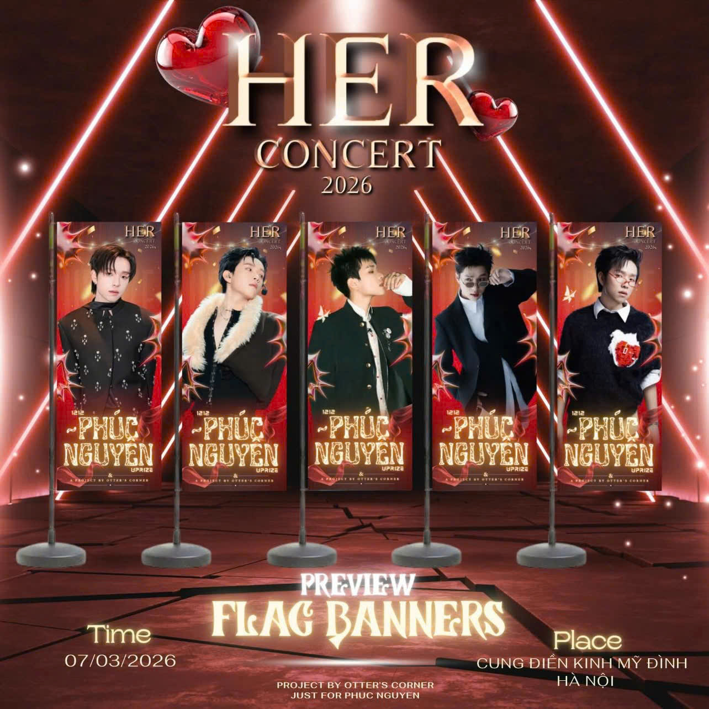
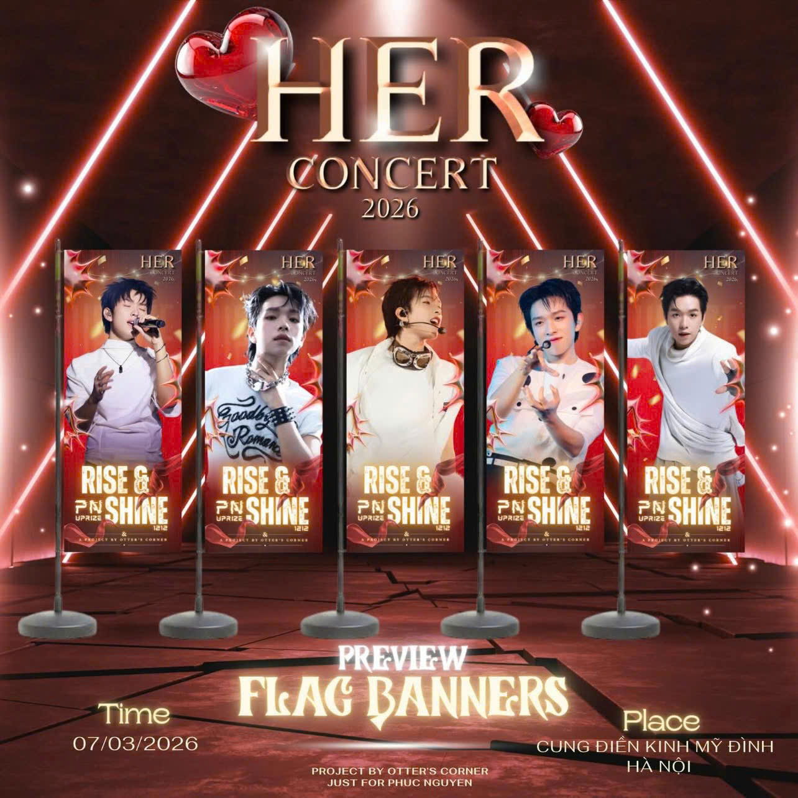
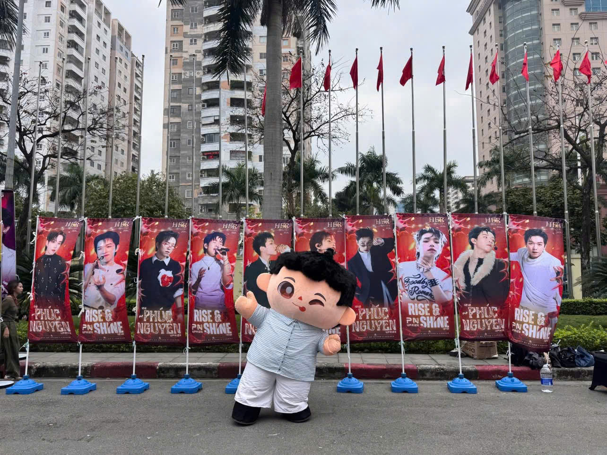
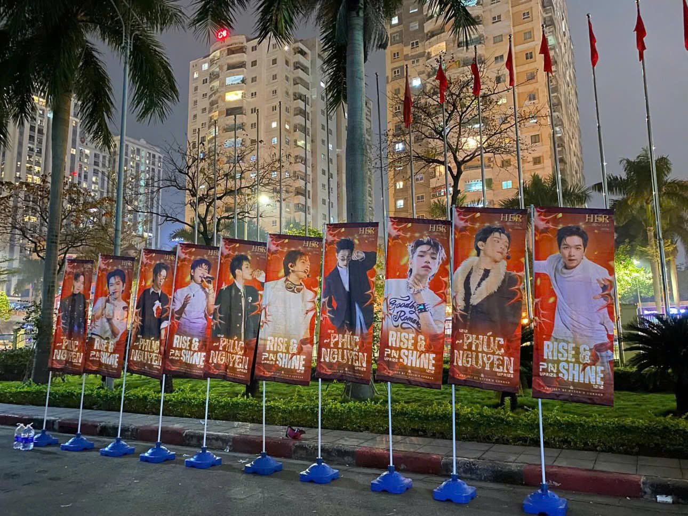

A special support project for Phúc Nguyên




PROJECT INFORMATION
Dự án tiếp ứng từ Otter’s Corner với cụm 10 phướn được gửi đến HER Concert như một dấu mốc nhỏ, mở đầu cho hành trình đồng hành cùng Phúc Nguyên. Mỗi phướn mang theo một lời chúc, một niềm tin và niềm tự hào, mong Phúc Nguyên luôn vững vàng, tự tin và không ngừng vươn xa trên những chặng đường phía trước.